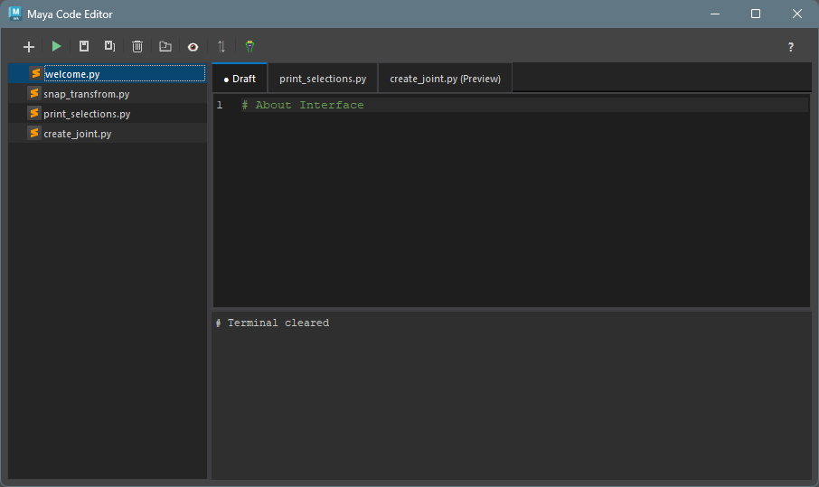
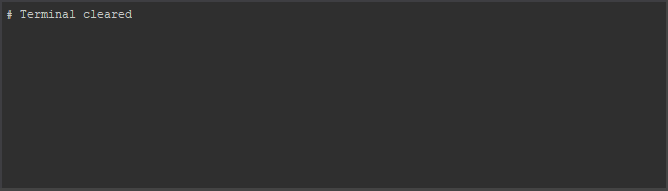

Code Editor
概要
Maya 用のカスタム Python コードエディターです。
シンタックスハイライト、ファイルエクスプローラー、ターミナルなどの機能を備えています。
起動方法
専用のメニューか、以下のコマンドでツールを起動します。
import faketools.tools.common.code_editor.ui
faketools.tools.common.code_editor.ui.show_ui()import faketools.tools.common.code_editor.ui
faketools.tools.common.code_editor.ui.show_ui(floating=True)floating=True
を指定すると、フローティングウィンドウとして起動します。
floating=False (デフォルト)
を指定すると、Maya
のメインウィンドウにドッキングします。
インターフェース
ツールのインターフェースは以下の主要なコンポーネントで構成されています。

ツールバー
ツールバーは、ファイルの作成や保存、コードの実行などの主要なアクションに素早くアクセスできます。
→ 詳細は ツールバーのドキュメント
を参照してください。

ファイルエクスプローラー
ファイルエクスプローラーは、プロジェクトのディレクトリ構造を表示し、ファイルの管理を容易にします。
→ 詳細は ファイルエクスプローラーのドキュメント
を参照してください。

コードエディター
コードエディターは、シンタックスハイライト、エラーチェックなどの高度なコード編集機能を提供します。
→ 詳細は コードエディターのドキュメント
を参照してください。

ターミナル
ターミナルは、コードの実行結果やエラーメッセージを表示します。
→ 詳細は ターミナルのドキュメント
を参照してください。

コードを実行する
- ツールバーの ＋ アイコンをクリックして新しいファイルを作成します。
- コードエディターに Python コードを入力します。
- ツールバーの ▶ アイコンをクリックしてコードを実行します。
- アウトプットコンソールに実行結果が表示されます。
設定ファイル
ツールは、以下の場所に設定ファイルを保存します。
- ユーザー設定:
%MAYA_APP_DIR%/faketools_workspace/common/code_editor/config/user_settings.json - セッション:
%MAYA_APP_DIR%/faketools_workspace/common/code_editor/config/session.json - ワークスペース設定:
%MAYA_APP_DIR%/faketools_workspace/common/code_editor/config/workspace.json - ワークスペースファイル:
%MAYA_APP_DIR%/faketools_workspace/common/code_editor/workspace/ - オートセーブ:
%MAYA_APP_DIR%/faketools_workspace/common/code_editor/workspace/.maya_code_editor_backups/
詳細な設定については、ユーザー設定をご覧ください。